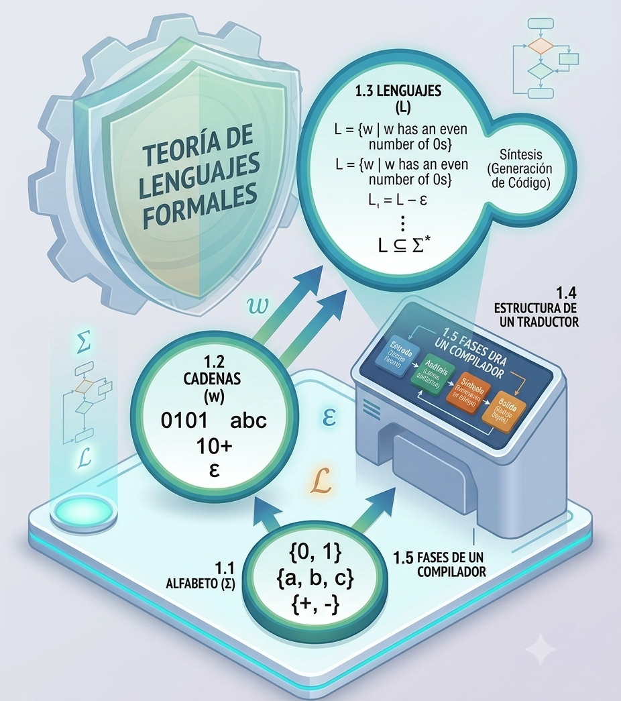
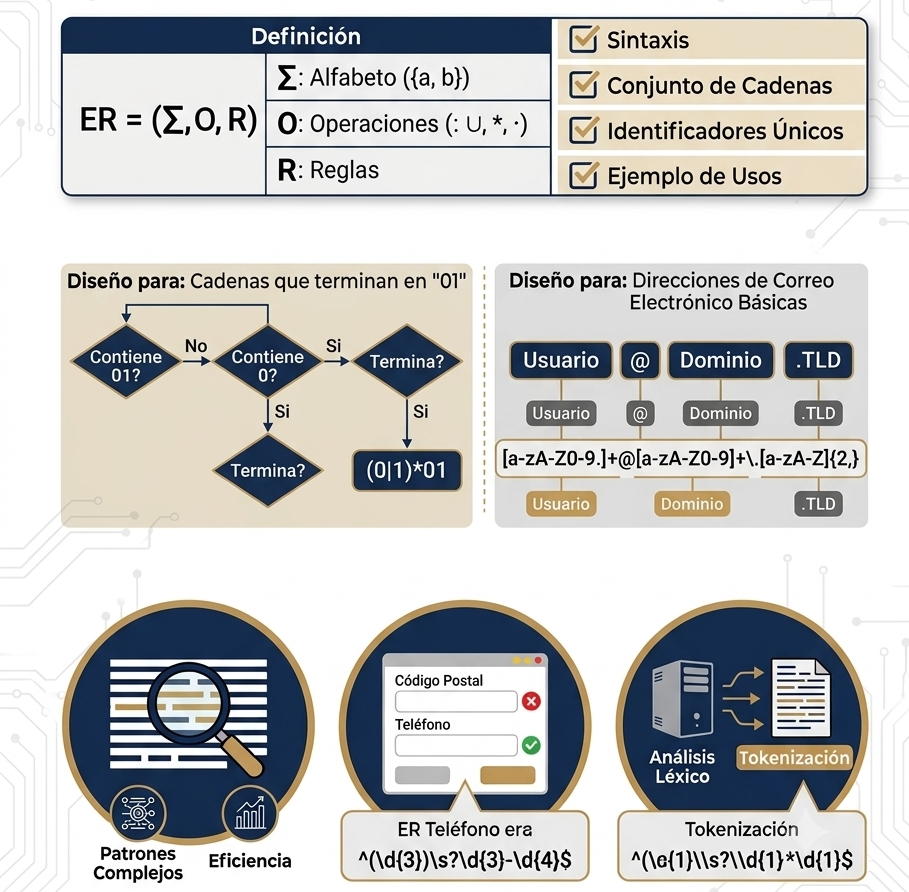
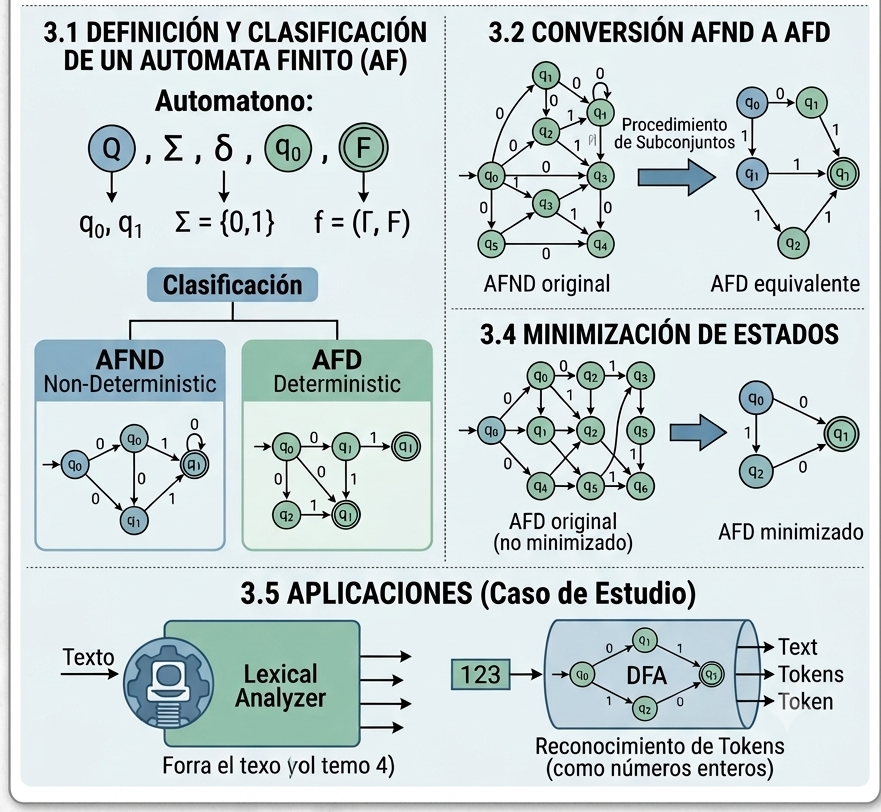
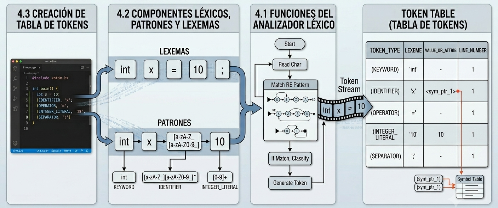
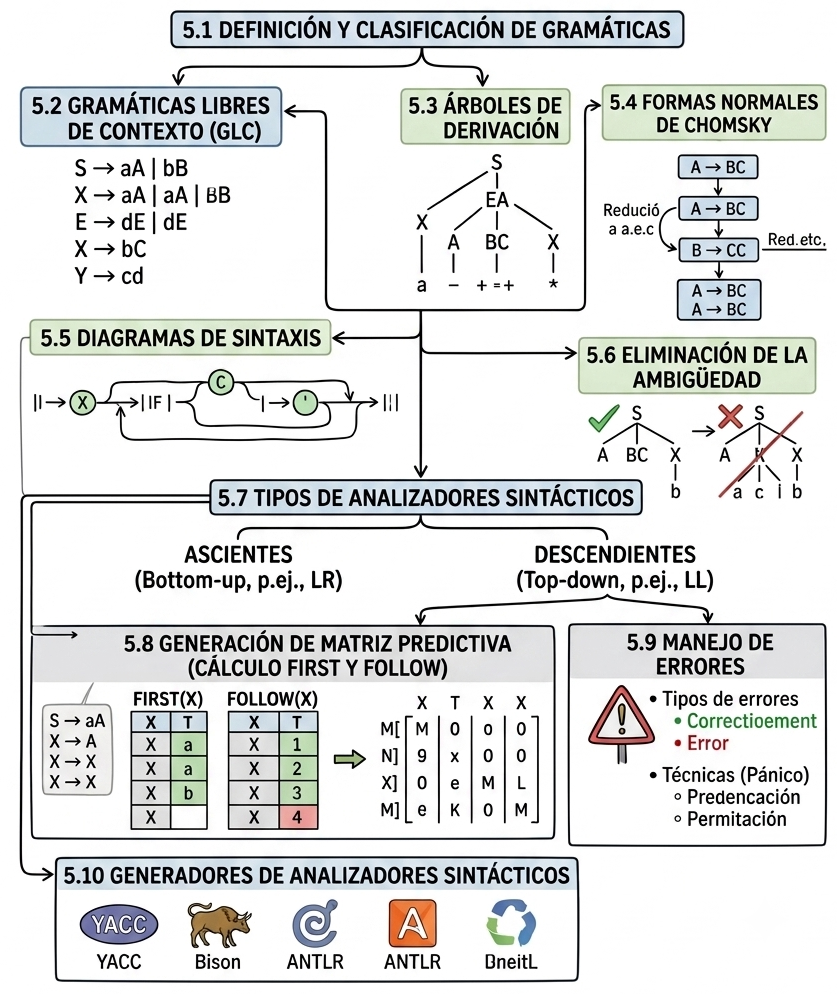
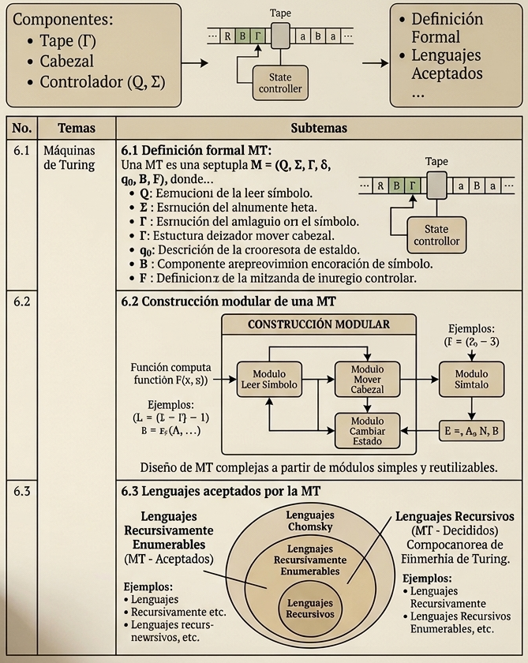

Fundamento Matemático
La Teoría de Lenguajes y Autómatas se fundamenta en modelos matemáticos que permiten describir formalmente sistemas computacionales y procesos de reconocimiento de patrones.
- Alfabetos (Σ): conjunto finito de símbolos.
- Lenguajes (L): conjunto de cadenas válidas.
- Expresiones Regulares (ER): describen patrones.
- Autómatas Finitos (AF): reconocen lenguajes regulares.
- Gramáticas Formales (G): definen estructuras sintácticas.
- Máquinas de Turing (MT): modelo general de computación.
Temas Principales
📘 Introducción a la Teoría de Lenguajes Formales
1.1 Alfabeto
Definición
Un conjunto finito y no vacío de símbolos.
Desarrollo
En el enfoque formal de Hopcroft, un alfabeto se denota con la letra griega Σ. Constituye la base matemática sobre la cual se construyen cadenas y lenguajes formales.
Ejemplo
Σ = {0,1}
Aplicación
Definición de identificadores, constantes y palabras reservadas en compiladores.
Modelo Matemático
Σ = {a,b}
1.2 Cadenas
Definición
Secuencia finita de símbolos pertenecientes a un alfabeto.
Desarrollo
Las cadenas representan palabras formales. Su longitud se denota como |w| y la cadena vacía se representa mediante ε.
Ejemplo
Si Σ = {a,b}, entonces w = aab es una cadena de longitud 3.
Aplicación
Representación formal de programas, datos y mensajes digitales.
1.3 Lenguajes, Tipos y Herramientas
Definición
Conjunto de cadenas construidas a partir de un alfabeto.
Desarrollo
Un lenguaje formal es cualquier subconjunto de Σ*. Las herramientas principales para describirlos son las gramáticas, expresiones regulares y autómatas.
Ejemplo
L = { w ∈ {0,1}* | w contiene un número par de ceros }
Aplicación
Diseño de lenguajes de programación y sistemas de validación sintáctica.
1.4 Estructura de un Traductor
Definición
Sistema encargado de transformar un lenguaje fuente en otro lenguaje equivalente.
Desarrollo
Está compuesto por fases de análisis y síntesis que verifican la estructura y generan una representación equivalente.
Ejemplo
Traductor de un lenguaje de alto nivel hacia código máquina.
Aplicación
Compiladores, intérpretes y transpiladores modernos.
1.5 Fases de un Compilador
Definición
Etapas secuenciales utilizadas para transformar código fuente en código ejecutable.
Desarrollo
Incluyen análisis léxico, sintáctico, semántico, optimización y generación de código.
Ejemplo
Detección de un error sintáctico antes de generar código objeto.
Aplicación
Desarrollo de compiladores, IDEs y herramientas de análisis de código.
🔎 Expresiones Regulares
2.1 Definición Formal de una ER
Definición
Notación matemática utilizada para describir lenguajes regulares.
Desarrollo
Las expresiones regulares se construyen utilizando símbolos básicos, unión, concatenación y clausura de Kleene.
Ejemplo
(0+1)*1
Aplicación
Especificación de patrones utilizados por analizadores léxicos.
Modelo Matemático
(a+b)*abb
2.2 Diseño de ER
Definición
Proceso de construcción de expresiones regulares para representar un lenguaje.
Desarrollo
Se utilizan propiedades algebraicas y operadores de unión, concatenación y repetición para representar conjuntos de cadenas.
Ejemplo
d+(.d+)? para representar números decimales.
Aplicación
Validación de datos y reconocimiento de patrones en software.
2.3 Aplicaciones en Problemas Reales
Definición
Uso práctico de las expresiones regulares para procesar información.
Desarrollo
Permiten realizar búsquedas, filtrado de datos y reconocimiento automático de patrones complejos.
Ejemplo
Validación de correos electrónicos o números telefónicos.
Aplicación
Motores de búsqueda, sistemas de seguridad y procesamiento de texto.
⚙️ Autómatas Finitos
3.1 Definición y Clasificación de AF
Definición
Un modelo matemático abstracto de un sistema que transiciona a través de un conjunto finito de estados en respuesta a estímulos.
Desarrollo
Hopcroft define formalmente un Autómata Finito Determinista (AFD) como una 5-tupla A=(Q,Σ,δ,q0,F), donde Q es el conjunto de estados, Σ el alfabeto, δ la función de transición, q0 el estado inicial y F el conjunto de estados de aceptación. En un AFND, la función de transición permite múltiples rutas posibles.
Ejemplo
Un autómata de dos estados que cambia de estado cada vez que lee un símbolo 1 para determinar si la cantidad de unos es par o impar.
Aplicación
Modelado de circuitos secuenciales, protocolos de comunicación y sistemas de control digital.
Modelo Matemático
M = (Q, Σ, δ, q₀, F)
3.2 Conversión de AFND a AFD
Definición
Proceso que transforma un AFND en un AFD equivalente que reconoce exactamente el mismo lenguaje.
Desarrollo
Se utiliza el Algoritmo de Construcción de Subconjuntos. Cada estado del nuevo AFD representa un subconjunto de estados del AFND original.
Ejemplo
Un AFND con tres posibles transiciones para el símbolo 0 se transforma en un estado compuesto dentro del AFD.
Aplicación
Optimización de analizadores léxicos y motores de búsqueda con tiempos de ejecución lineales.
3.3 Representación de ER usando AFND
Definición
Construcción algorítmica que representa cualquier expresión regular mediante un autómata finito equivalente.
Desarrollo
La Construcción de Thompson genera fragmentos de autómatas para unión, concatenación y clausura de Kleene, formando un AFND equivalente a la expresión regular.
Ejemplo
La expresión regular a+b puede representarse mediante dos caminos paralelos conectados por transiciones ε.
Aplicación
Implementación de motores de expresiones regulares en lenguajes como Java y Python.
3.4 Minimización de Estados
Definición
Algoritmo que encuentra el AFD equivalente con el menor número posible de estados.
Desarrollo
Se basa en identificar estados equivalentes y distinguibles, agrupándolos hasta obtener la representación mínima del autómata.
Ejemplo
Tres estados que realizan exactamente las mismas transiciones pueden fusionarse en uno solo.
Aplicación
Reducción del uso de memoria en analizadores léxicos y diseño de hardware digital.
3.5 Caso de Estudio
Definición
Aplicación práctica de los lenguajes regulares para resolver un problema real.
Desarrollo
Se parte de requisitos sintácticos, se diseña una expresión regular, se transforma a autómata y posteriormente se optimiza.
Ejemplo
Validador de comandos sintácticos para un sistema de comunicación satelital.
Aplicación
Automatización industrial, validadores de protocolos y analizadores léxicos.
🧩 Análisis Léxico
4.1 Funciones del Analizador Léxico
Definición
Módulo inicial del compilador encargado de transformar caracteres en tokens.
Desarrollo
Escanea el código fuente, elimina espacios y comentarios, identifica lexemas y genera tokens que serán procesados por el analizador sintáctico.
Ejemplo
La secuencia de caracteres "while" es reconocida como una palabra reservada del lenguaje.
Aplicación
Compiladores, resaltadores de sintaxis y herramientas de análisis de código.
4.2 Componentes Léxicos, Patrones y Lexemas
Definición
Conceptos fundamentales utilizados para clasificar elementos válidos del lenguaje.
Desarrollo
Un token representa una categoría, un patrón define la estructura mediante expresiones regulares y un lexema es la cadena real encontrada en el código.
Ejemplo
En "x = 10", el lexema "10" corresponde al token LITERAL_ENTERO.
Aplicación
Procesamiento de lenguajes de programación y procesamiento de lenguaje natural.
Modelo Matemático
Token = <tipo, valor>
4.3 Tabla de Tokens
Definición
Estructura que almacena los tokens identificados junto con sus atributos.
Desarrollo
Cada token reconocido se registra en una tabla para ser utilizado durante el análisis semántico y la generación de código.
Ejemplo
<ID_TOKEN, dirección_memoria_nombre_variable>
Aplicación
Compiladores, enlazadores y depuradores de software.
4.4 Errores Léxicos
Definición
Errores producidos cuando una secuencia de caracteres no coincide con ningún patrón válido.
Desarrollo
El analizador detecta símbolos inválidos o secuencias incorrectas y aplica mecanismos de recuperación para continuar el procesamiento.
Ejemplo
Uso del símbolo "$" en un lenguaje donde dicho carácter no está permitido.
Aplicación
Desarrollo de compiladores robustos y herramientas de corrección automática de código.
4.5 Generadores de Analizadores Léxicos
Definición
Programas que generan automáticamente analizadores léxicos a partir de expresiones regulares.
Desarrollo
Procesan especificaciones léxicas, construyen autómatas y generan código optimizado para el reconocimiento de tokens.
Ejemplo
Flex (Fast Lexical Analyzer Generator).
Aplicación
Desarrollo rápido de compiladores, intérpretes y lenguajes específicos de dominio.
4.6 Caso de Estudio
Definición
Implementación práctica de un analizador léxico completo.
Desarrollo
Clasifica texto de entrada, detecta errores y genera tokens utilizando criterios basados en lenguajes regulares.
Ejemplo
Validador léxico para archivos de configuración en la nube.
Aplicación
Procesadores de JSON, XML, YAML y analizadores automáticos de registros de seguridad.
📐 Análisis Sintáctico
5.1 Definición y Clasificación de Gramáticas
Definición
Una gramática formal es un conjunto de reglas de producción utilizado para describir la estructura de un lenguaje.
Desarrollo
Las gramáticas permiten generar cadenas válidas de un lenguaje y se clasifican según la Jerarquía de Chomsky en regulares, libres de contexto, sensibles al contexto y recursivamente enumerables.
Ejemplo
S → aA
A → b
Aplicación
Diseño de compiladores y validación de estructuras sintácticas.
Modelo Matemático
G = (V, T, P, S)
5.2 Gramáticas Libres de Contexto (GLC)
Definición
Gramáticas donde cada producción tiene un único símbolo no terminal en el lado izquierdo.
Desarrollo
Las GLC son ampliamente utilizadas para describir la sintaxis de lenguajes de programación debido a su capacidad para representar estructuras jerárquicas.
Ejemplo
E → E + T | T
T → T * F | F
Aplicación
Definición de expresiones aritméticas y estructuras de control.
5.3 Árboles de Derivación
Definición
Representación gráfica de la aplicación de reglas de producción para generar una cadena.
Desarrollo
El árbol muestra la relación jerárquica entre símbolos terminales y no terminales durante una derivación.
Ejemplo
Árbol sintáctico generado para la expresión: a+b*c
Aplicación
Construcción de compiladores y análisis de expresiones.
5.4 Formas Normales de Chomsky
Definición
Transformación de una gramática libre de contexto a una estructura estandarizada.
Desarrollo
Las producciones se reducen a formas específicas para simplificar algoritmos de análisis sintáctico.
Ejemplo
A → BC
A → a
Aplicación
Implementación de algoritmos de reconocimiento como CYK.
5.5 Diagramas de Sintaxis
Definición
Representación gráfica de reglas gramaticales mediante diagramas de flujo.
Desarrollo
Facilitan la comprensión visual de la estructura sintáctica de un lenguaje.
Ejemplo
Diagrama para una instrucción IF-THEN-ELSE.
Aplicación
Documentación y diseño de lenguajes de programación.
5.6 Eliminación de Ambigüedad
Definición
Proceso para garantizar una única interpretación sintáctica de cada cadena.
Desarrollo
Se modifican las reglas de producción para eliminar múltiples árboles de derivación para una misma cadena.
Ejemplo
Resolver la ambigüedad de operadores mediante reglas de precedencia.
Aplicación
Compiladores y lenguajes formales.
5.7 Tipos de Analizadores Sintácticos
Definición
Algoritmos utilizados para verificar la estructura sintáctica de una entrada.
Desarrollo
Se clasifican en descendentes (Top-Down) y ascendentes (Bottom-Up).
Ejemplo
LL(1) y LR(1).
Aplicación
Implementación de compiladores modernos.
5.8 Generación de Matriz Predictiva
Definición
Tabla utilizada por analizadores predictivos para decidir qué producción aplicar.
Desarrollo
Se construye utilizando los conjuntos FIRST y FOLLOW.
Ejemplo
Matriz LL(1) generada a partir de una gramática libre de contexto.
Aplicación
Analizadores sintácticos predictivos.
5.9 Manejo de Errores
Definición
Conjunto de técnicas para detectar y recuperarse de errores sintácticos.
Desarrollo
Permite continuar el análisis incluso después de encontrar errores.
Ejemplo
Recuperación por modo pánico.
Aplicación
Compiladores y herramientas de desarrollo.
5.10 Generadores de Analizadores Sintácticos
Definición
Herramientas que generan automáticamente analizadores sintácticos.
Desarrollo
Transforman una especificación gramatical en código ejecutable.
Ejemplo
YACC, Bison y ANTLR.
Aplicación
Desarrollo rápido de compiladores.
💻 Máquinas de Turing
6.1 Definición Formal de una Máquina de Turing
Definición
Modelo matemático de computación propuesto por Alan Turing.
Desarrollo
Una Máquina de Turing se define como una 7-tupla compuesta por estados, alfabeto de entrada, alfabeto de cinta, función de transición, estado inicial y estados de aceptación.
Ejemplo
Máquina que reconoce cadenas con igual número de símbolos a y b.
Aplicación
Fundamento teórico de la computación moderna.
Modelo Matemático
M = (Q, Σ, Γ, δ, q₀, B, F)
6.2 Construcción Modular de una MT
Definición
Método para diseñar máquinas complejas mediante módulos reutilizables.
Desarrollo
Cada módulo realiza una función específica como leer símbolos, mover el cabezal o cambiar estados.
Ejemplo
Módulo lector, módulo de movimiento y módulo de escritura.
Aplicación
Diseño de algoritmos complejos y simuladores.
6.3 Lenguajes Aceptados por la MT
Definición
Conjunto de lenguajes reconocidos por una Máquina de Turing.
Desarrollo
Incluyen los lenguajes recursivos y los recursivamente enumerables, ubicados en el nivel más alto de la Jerarquía de Chomsky.
Ejemplo
Lenguajes que requieren memoria ilimitada para su reconocimiento.
Aplicación
Teoría de la computabilidad y análisis de algoritmos.
Galería Académica

Teoría de Lenguajes Formales

Expresiones Regulares

Autómatas Finitos

Análisis Léxico

Análisis Sintáctico

Máquinas de Turing
Laboratorio Interactivo
Pon en práctica los conceptos estudiados mediante simuladores básicos de Expresiones Regulares y Autómatas Finitos.
🧪 Simulador de Expresiones Regulares
Ingrese una cadena formada únicamente por los símbolos a y b.
Bibliografía
Hopcroft, J. E., Motwani, R. y Ullman, J. D. Introducción a la Teoría de Autómatas, Lenguajes y Computación. Pearson Educación.
Project Management Institute (PMI). PMBOK® Guide Quinta Edición.